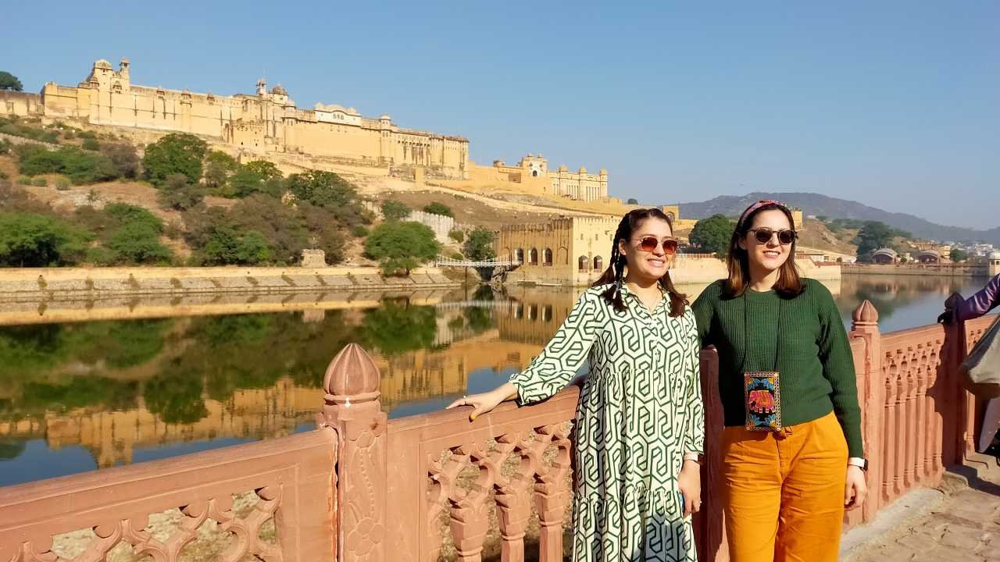
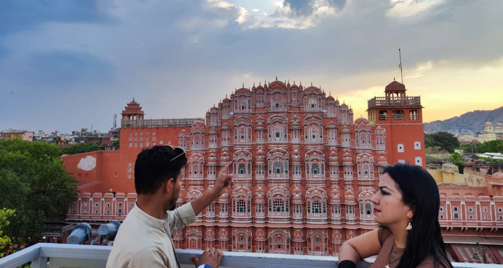
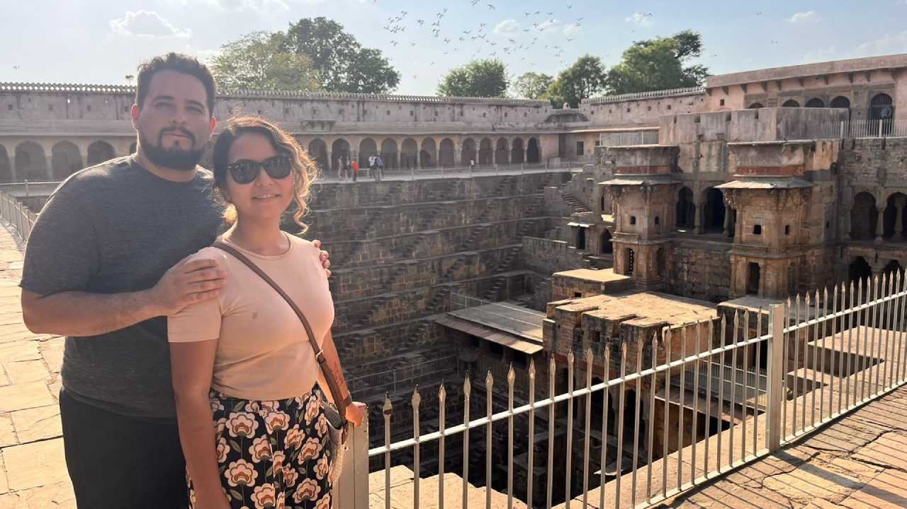
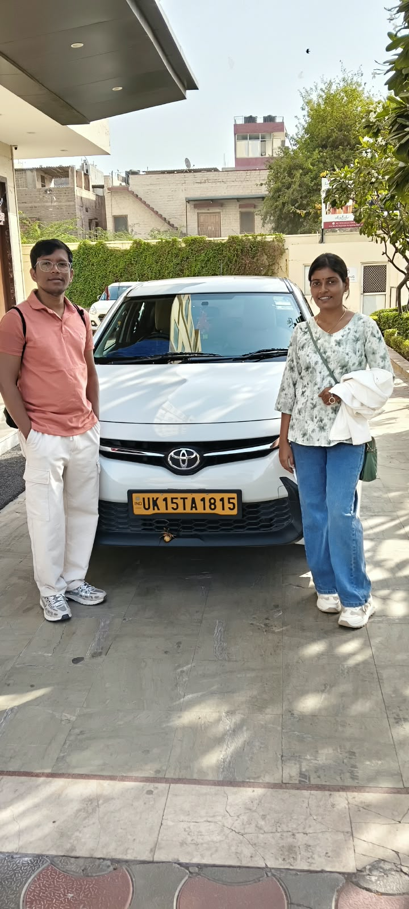
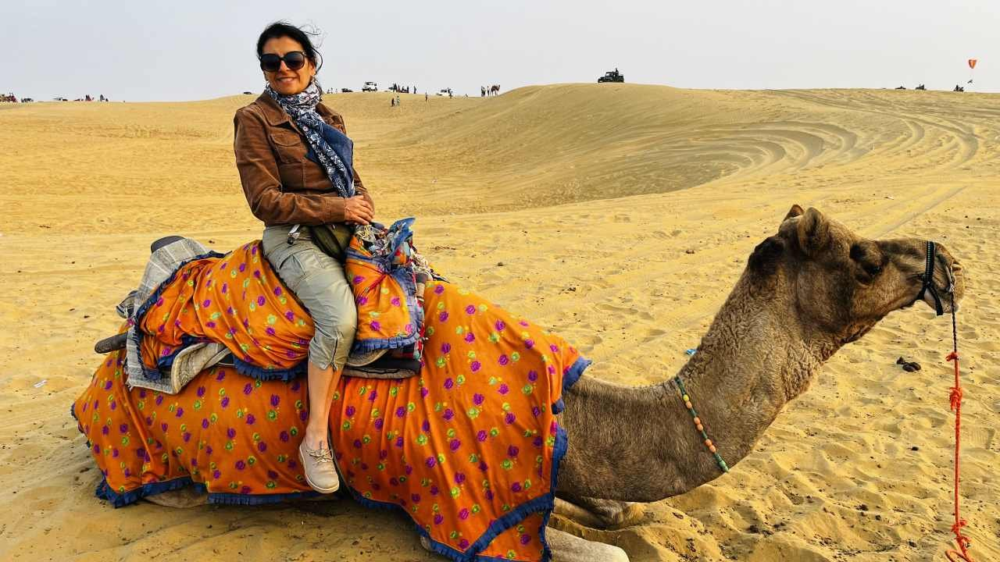
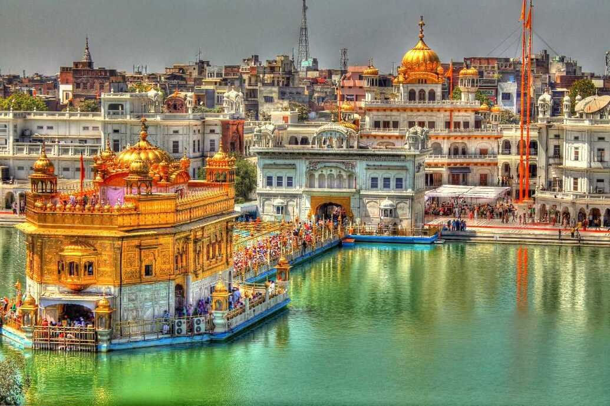
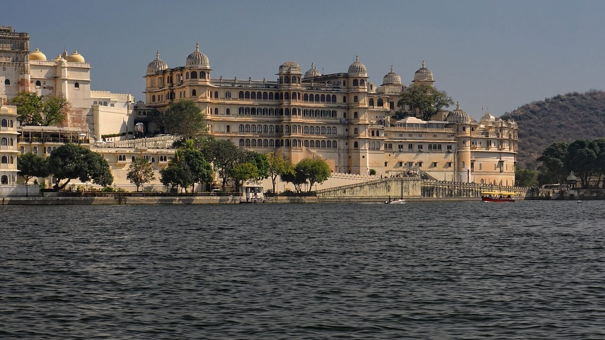

Find your next journey
North India Tours
Explore North India’s landmarks, royal cities and spiritual destinations. Contact our Kotdwara team to discuss your travel requirements.
Suggested itineraries · Availability, transport and inclusions are confirmed by enquiry.
16 journeys

Delhi- Agra- Jaipur- Delhi
Golden Triangle Tour – 3 Days
3 days
View tour

Delhi- Agra- Jaipur- Delhi
Golden Triangle Tour – 4 Days
4 days
View tour

Delhi- Agra- Jaipur- Delhi
Golden Triangle Tour – 5 Days
5 days
View tour

Delhi- Agra- Jaipur- Delhi
Golden Triangle Tour – 6 Days
6 days
View tour

Delhi- Agra- Jaipur- Varanasi- Delhi
Golden Triangle with Varanasi – 6 Days
6 days
View tour

Delhi – Varanasi – Delhi
Delhi to Varanasi – 5-Day Rail Journey
5 days
View tour

Delhi- Jaipur- Agra- Gwalior- Orcha- Khajuraho- Varanasi- Delhi
Golden Triangle with Khajuraho & Varanasi
13 days
View tour

Delhi – Jaipur – Agra- Varanasi- Delhi
Golden Triangle with Varanasi
10 days
View tour

Delhi - Agra - Delhi
Same-Day Agra Tour from Delhi by Train
1 day
View tour

Delhi - Agra - Delhi
Same-Day Agra Tour from Delhi by Car
1 day
View tour

Jaipur- Agra- Jaipur
Same-Day Agra Tour from Jaipur by Car
1 day
View tour

Delhi- Agra- Delhi
Overnight Taj Mahal & Agra Tour from Delhi
2 days
View tour

Delhi – Agra – Jaipur – Jodhpur – Jaisalmer – Bikaner- Delhi
Rajasthan with the Taj Mahal – 12 Days
12 days
View tour

Delhi- Jaipur- Agra- Delhi- Amritsar- Delhi
Golden Triangle with Amritsar – 10 Days
10 days
View tour
Jaipur- Mandawa- Bikaner- Jaisalmer- Jodhpur...
Royal & Classic Rajasthan Tour
15 days
View tour

Jaipur- Mandawa- Bikaner-...
Delhi, Bikaner & Jaisalmer – 15 Days
15 days
View tour
No journeys match your search. Try another destination or duration.